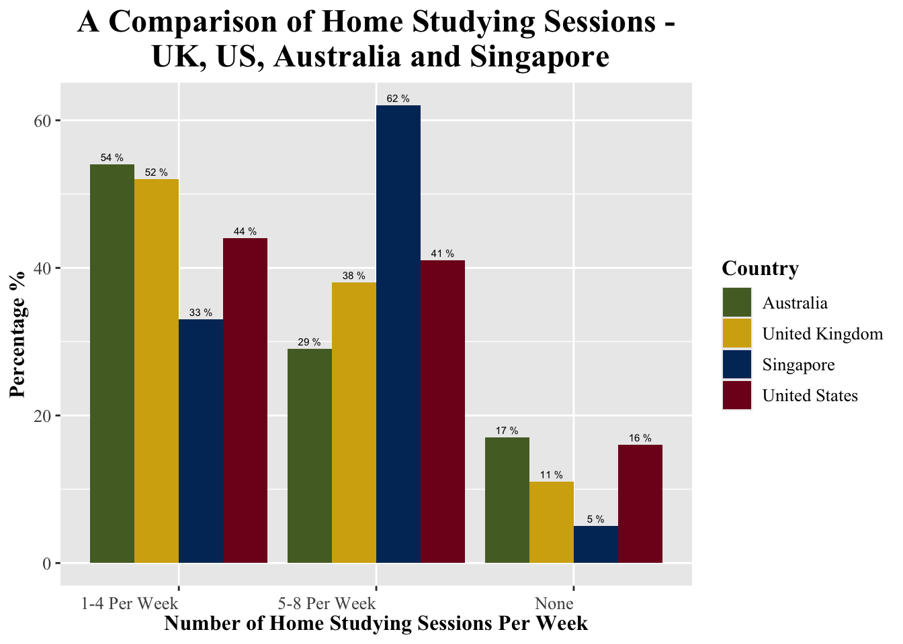

# load libraries
library(arrow)
library(tidyverse)
#link to PISA 2022 Data
PISA_2022 <- read_parquet("/Users/k1765032/Library/CloudStorage/OneDrive-King'sCollegeLondon/QERKCL_PISA/data/pisa/2022/PISA_student_2022.parquet")
# Filter dataset and categorise home study percentages
plot_data <- PISA_2022 %>%
select(CNT,PV1MATH, STUDYHMW) %>%
filter(CNT == "Singapore" | CNT == "United Kingdom" | CNT == "United States" |CNT == "Australia") %>%
mutate(Homework_TPW = case_when(
STUDYHMW %in% c("No studying") ~ "None",
STUDYHMW %in% c("1 time of studying per week", "2 times of studying per week",
"3 times of studying per week", "4 times of studying per week") ~ "1-4 Per Week",
STUDYHMW %in% c("5 times of studying per week","6 times of studying per week",
"7 times of studying per week", "8 times of studying per week") ~ "5-8 Per Week",
)) %>%
filter(!is.na(Homework_TPW)) %>%
group_by(CNT, Homework_TPW) %>%
summarise(count = n()) %>%
mutate(perc = round(count/sum(count) * 100, digits = 0))
#Plotting
ggplot(data = plot_data, aes(x = Homework_TPW, y= perc, fill = CNT)) +
geom_bar(position = position_dodge(), stat = "identity") +
geom_text(stat = 'identity',
aes(label = paste(perc, "%")),
position = position_dodge(width = 0.9),
vjust = -0.5,
size = 2) +
theme(axis.text.x = element_text(angle = 0, vjust = 0.5, hjust=1),
text = element_text(family = "Times New Roman"), # Change font family
plot.title = element_text(size = 18, face = "bold", hjust = 0.5), # Title style
plot.subtitle = element_text(size = 14, hjust = 0.5, color = "gray40"), # Subtitle style
axis.title = element_text(size = 12, face = "bold"), # Axis labels
axis.text = element_text(size = 10), # Tick labels
legend.title = element_text(size = 12, face = "bold"), # Legend title
legend.text = element_text(size = 10) # Legend text
) +
scale_fill_manual(values = c("United Kingdom" = "#D4AC0D" , "Singapore" = "#003366", "United States" = "#800020",
"Australia" = "#556B2F" )) +
labs(x= "Number of Home Studying Sessions Per Week", y= "Percentage %",
title = "A Comparison of Home Studying Sessions -\n UK, US, Australia and Singapore", fill = "Country")